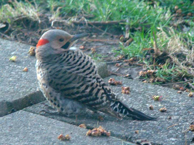

My daughter Lesley worked for the Columbus Parks and Recreation Department one summer while she was a student at Indiana University. Taking a break while mowing a golf course, a fellow employee said to her, “I bet you don’t know what bird that is,” pointing to a large bird on the ground probing for insects. “Oh yes I do,” she replied. “It’s a yellow-shafted flicker.” Whether that piqued his interest in this young lady or not, I don’t know, but Wes is now my son-in-law and father of my three grandsons.
Growing up in Massachusetts, I heard the flicker referred to only as a “yellow-hammer.” He is known by various other names that describe its yellow under-wing feathers and its drumming.
The flicker is a large 13-inch woodpecker that is most often seen on the ground probing for ants, which make up 45% of its diet. It will also catch insects in the air and eat fruit, berries and seeds. I’ve never seen one at a feeder, but it’s reported to frequent them. It is said to be the only woodpecker that spends most of its feeding time on the ground.
Flickers are easily identified by their size as well as their behavior. The yellow-shafted is named for the golden underside of their wing and tail feathers. It’s gray head and neck have a red nape and black moustache in the male. The back is “barred” with black stripes, and the breast sports a black bib and black speckles. In its undulating flight it has a conspicuous white rump as well as the golden flash of underwings if you are fortunate to see it from underneath.
A male flicker once landed on my patio and remained there hunkered down for some minutes, craning his neck in all directions. Finally he flew up into the nearby maple tree and continued to survey the area, attempting to keep a low profile. I assumed there had been a hawk in the area, and he felt threatened.
Both male and female flickers will “display” during courting, especially if there are rival sexes nearby. Head bobbing and calling, drumming on any resonant object (one report says an old abandoned tractor provided good drumming) are mating behaviors. Sources describe the mating call as “woika woika, woika” or “wicker wicker wicker.” A loud “kekekekeke” is heard when establishing or defending its territory.
The nest is built in a tree cavity, taking from one to two weeks to complete. Both male and female build the nest and incubate the six to eight pure white, glossy eggs, which hatch in less than two weeks. The young are fed by regurgitation. They fledge in about three weeks.
Flickers are reported to be most prolific. If for whatever reason the clutch is destroyed, the female will keep laying eggs until successfully hatched and raised.
As occurs with other cavity nesters, starlings will sometimes chase the flickers away from their nesting site.
National Geographic’s – Song and Garden Birds – reports that a flicker has been known (apparently banded) to live for about nine years. It lives companionably with other birds.
Northern flickers migrate southward for winters.
This is a common woodpecker that does its part to keep the numbers of insects in check, no doubt saving many a tree in the process. I welcome the colorful flickers to my back yard and enjoy capturing them on camera. They are usually too busy excavating for ants to notice me lurking about to get a good shot!
The “yellowhammer” is the state bird of Alabama.
